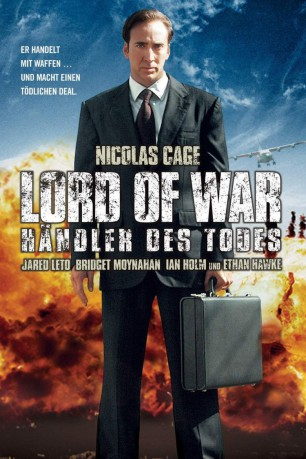
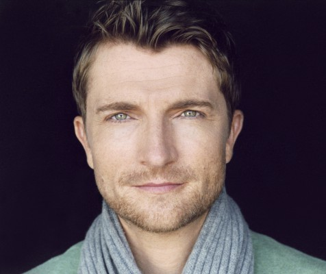

#1707 Lord of War - Händler des Todes
Alternativ: Lord of War
 
 IMDB-Wertung: 7.6 / 10
IMDB-Wertung: 7.6 / 10  Metascore: 62
Metascore: 62 
Der Handel mit Waffen ist ein dreckiges aber lukratives Geschäft. Und Yuri Orlov ist darin der Beste. Nach bescheidenen Anfängen in New Yorks Stadtteil Little Odessa steigt er gemeinsam mit seinem Bruder Vitali nach dem Fall des Eisernen Vorhangs zum mächtigsten Waffenschieber der Welt auf. Unmenschliche Diktatoren und legitime Staatsoberhäupter – Yuri versorgt sie alle. Partei ergreift er nicht, so lange die Kasse stimmt. Da heftet sich auf dem Höhepunkt seiner Karriere der Interpol-Agent Jack Valentine an seine Fersen und Ehefrau Ava stellt ihn vor ein Ultimatum. Yuri will sich für die Familie entscheiden, doch seine Kunden sind ihm unangenehm treu…
Jahr: 2005
Dauer: 122 Minuten
FSK: 16
Land: USA Studio: Lions Gate FilmsTonspuren: DTS - ,
Untertitel: Deutsch,
Auflösung: 1080p (1920x800) Größe: 11776 MB
Genre: Krimi, Drama, Thriller
Regisseur: Andrew Niccol
Drehbuch: Andrew Niccol
Soundtrack: Antonio Pinto
Darsteller:
 Nicolas Cage als Yuri Orlov
Nicolas Cage als Yuri Orlov Bridget Moynahan als Ava Fontaine
Bridget Moynahan als Ava Fontaine Jared Leto als Vitaly Orlov
Jared Leto als Vitaly Orlov- Shake Tukhmanyan als Irina Orlov
- Jared Burke als Ukrainian Mobster
- Eric Uys als Ukrainian Mobster
 David Shumbris als Ukrainian Mobster
David Shumbris als Ukrainian Mobster Jeremy Crutchley als Arms Fair Salesman
Jeremy Crutchley als Arms Fair Salesman Ian Holm als Simeon Weisz
Ian Holm als Simeon Weisz Donald Sutherland als Colonel Oliver Southern
Donald Sutherland als Colonel Oliver Southern Ethan Hawke als Jack Valentine
Ethan Hawke als Jack Valentine Evgeniy Lazarev als General Dmitri
Evgeniy Lazarev als General Dmitri- Weston Cage als Vladimir
- Larissa Bond als Alena
 Sammi Rotibi als Andre Baptiste Junior
Sammi Rotibi als Andre Baptiste Junior Eamonn Walker als Andre Baptiste Senior
Eamonn Walker als Andre Baptiste Senior Liya Kebede als Faith
Liya Kebede als Faith- Jasmine Burgess als Gloria
- Tanit Phoenix als Candy
- Kutcha als Interpol Agent Maxwell
- Nalu Tripician als Older Nicolai
- Mohamed Omar als Sudan Border Guard
 Ty Copeman als Art Dealer , uncredited
Ty Copeman als Art Dealer , uncredited Mikhail Gorbachev als Himself , archive footage, uncredited
Mikhail Gorbachev als Himself , archive footage, uncredited-  Jean-Michel Richaud als Additional Voices , uncredited
- Inna Swann als Additional Russian Voices , uncredited
 Patrick John Walton als FBI Agent / Ukraine Major , uncredited
Patrick John Walton als FBI Agent / Ukraine Major , uncredited- Jean-Pierre Nshanian als Anatoly Orlov
- Stewart Morgan als Ukrainian Mobster
- Jasper Lenz als Gregor
- Stephen Gregor als Eli Kurtzman
- Kobus Marx als Boris
- Stephan De Abreu als Liev
- Tanya Finch als Ingrid
- Lize Jooste als Natasha
- Yaseen Abdullah als Lebanese Customer
- David Harman als Colonel Oliver Southern
- Neil Tweddle als Colonel Oliver Southern
- Prosper Hakiziman als Somalian Freedom Fighter
- Chi Zhang Yi als Borneo Officer
- Sajad Khan als Mujahadeen Leader
- John Sferopoulos als Freighter Captain
- Gamiet Peterson als 'Kono' Painter
- Danie Struwig als Interpol Agent Ryan
- Tony Caprari als Raoul
- Jack Niccol als Young Nicolai
- Annelene Terblanche als Angel
- Stanislav Majer als Ukrainian Guard
- Zdenek Pechácek als Ukraine Major
- Gugulethu 'Gugu' Zulu als Andre's Driver
Datei: X:\2005(G-M)\Lord of War - Händler des Todes (2005, FSK16, 1920x800).mkv seit 07.08.2015
Festplatte: HD 2005(G-Z)-2006(A-Z)
 Es gibt insgesamt 46 Filme in der Gruppe '2005(G-M)'
Es gibt insgesamt 46 Filme in der Gruppe '2005(G-M)'